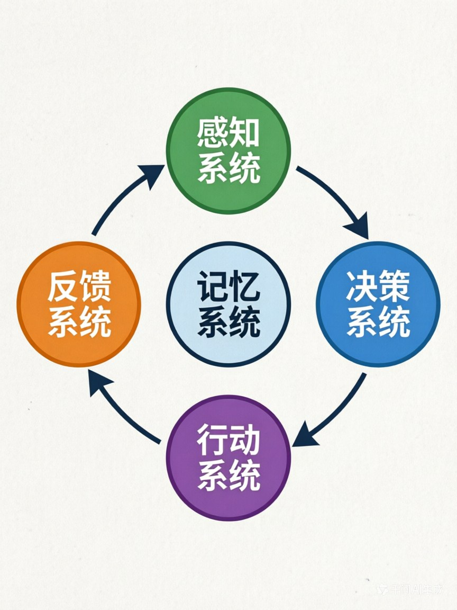

第三章：Agent的三大核心支柱—— 感知、决策、行动
章节核心目标
彻底搞懂Agent的完整工作闭环,建立Agent的核心认知框架,理解感知、决策、行动三大支柱的协作机制。
开篇思考:Agent是怎么"思考"和"做事"的?
在第一章,我们讲了Agent的核心特征:目标驱动的自主闭环智能体。
但你可能还有疑问:"这个'闭环'具体是怎么运转的?Agent内部有哪些核心组件?这些组件是怎么协作的?"
这一章,我们会彻底拆解Agent的"黑箱",让你看清它的完整工作流程。
一、先破后立:Agent不是"线性执行",而是"闭环迭代"
这是新手最容易犯的认知错误:认为Agent的工作逻辑是线性的。
❌ 错误认知:线性执行
用户输入 → Agent处理 → 输出结果这种认知的问题?
- 认为Agent只会"一次性"完成任务
- 没有考虑"失败重试"、"优化迭代"的情况
- 这是传统程序的思维,不是Agent的思维
✅ 正确认知:闭环迭代
感知 → 决策 → 行动 → 反馈 → 再感知 → 再决策 → 再行动 → ...直到完成目标Agent的核心逻辑是"循环",不是"线性"。
📊 具象案例:帮用户点咖啡
线性执行(错误):
- 用户说:"帮我点一杯冰美式"
- Agent调用XX咖啡店API下单
- API返回:"该店铺已闭店"
- Agent停止,任务失败
闭环迭代(正确):
- 用户说:"帮我点一杯冰美式"
- Agent调用XX咖啡店API下单
- API返回:"该店铺已闭店"
- Agent感知到失败
- Agent重新决策:换一家同品类的咖啡店
- Agent调用YY咖啡店API下单
- API返回:"下单成功"
- Agent通知用户:"已经帮你下单了,预计20分钟送达"
核心区别:闭环迭代让Agent能"自主优化",直到完成目标。
二、底层底座:记忆系统—— 三大支柱的"数据中枢"
在拆解三大支柱之前,我必须先讲一个容易被忽视但极其重要的组件:记忆系统。
🎯 记忆系统的核心作用
记忆系统是三大支柱的"数据中枢":
- 感知的内容 → 存入记忆系统
- 决策时 → 调取记忆系统里的内容
- 行动的结果 → 回写记忆系统
- 下一次感知 → 基于更新后的记忆
没有记忆系统,Agent就"活不过第一轮"。
📋 案例:点咖啡的记忆系统
Agent的记忆系统存储了什么?
- 用户的口味偏好:"无糖、冰的、浓度偏淡"
- 用户的地址:"XX公司XX楼XX前台"
- 用户的预算:"不超过30元"
- 用户的历史订单:"上次在YY咖啡店点过,评价不错"
- 用户不喜欢:"XX咖啡店的咖啡太苦,不要点"
这些记忆,让Agent能做出"正确"的决策:
- ✅ 调用XX外卖API(而不是其他平台)
- ✅ 选择YY咖啡店(而不是用户不喜欢的XX咖啡店)
- ✅ 点"无糖冰美式,浓度偏淡"(而不是默认配方)
没有记忆系统,Agent每次都是"第一次见面",无法提供个性化服务。
三、支柱一:感知系统—— Agent的"五官"
🎯 核心作用
感知系统是Agent和世界交互的入口,负责"接收信息":
- 接收用户的目标指令
- 获取外部环境的信息
- 收集行动后的反馈结果
📋 感知的4种核心类型
| 感知类型 | 核心作用 | 具象案例 |
|---|---|---|
| 1. 用户自然语言输入 | 接收用户的目标、需求、反馈 | "帮我安排下周去上海的差旅" |
| 2. 工具返回的结果数据 | 接收API、工具的执行结果 | 机票API返回:"已找到3个航班,价格如下..." |
| 3. 多模态信息 | 接收图片、语音、视频等信息 | 用户发送一张餐厅图片,Agent识别出餐厅信息 |
| 4. 环境状态变化 | 感知环境的变化,优化决策 | Agent感知到"现在是晚上10点",决策"不再打电话打扰用户" |
🌟 案例:差旅Agent的感知
它感知了什么?
- 用户输入:"帮我安排下周去上海的差旅,预算3000以内"
- 外部信息:
- 机票API:查询到下周去上海的机票价格
- 酒店API:查询到会场附近的酒店列表
- 天气API:查询到上海下周的天气情况
- 反馈信息:
- 酒店预订API:"XX酒店已满房"
- 飞机票预订API:"已成功出票"
- 环境状态:
- 当前时间:2025年4月1日
- 用户位置:北京
- 会议时间:4月10日-12日
所有这些信息,都通过"感知系统"进入Agent。
四、支柱二:决策系统—— Agent的"大脑"
🎯 核心作用
决策系统是Agent的核心中枢,负责"思考":
- 理解目标
- 拆解任务
- 制定执行计划
- 选择要调用的工具
- 判断任务是否完成
- 优化后续的行动策略
📋 决策的核心流程
理解目标 → 拆解任务步骤 → 制定执行计划 → 选择工具 → 执行 → 验证结果 → 判断是否完成 → 优化下一步动作🌟 案例:差旅Agent的决策
用户说:"帮我安排下周去上海的差旅,预算3000以内,要靠近会场。"
Agent的决策过程:
第1步:理解目标
- 目标:安排上海差旅
- 约束条件:预算3000以内,靠近会场
第2步:拆解任务
- 查会场地址
- 查附近酒店(筛选符合预算的)
- 查往返机票
- 核算总费用
- 下单预订
- 同步日历
- 设置出行提醒
第3步:制定执行计划
- 先查会场地址 → 再查酒店 → 再查机票 → 核算预算 → 预订 → 同步日历 → 设置提醒
第4步:选择工具
- 查会场:调用搜索引擎
- 查酒店:调用携程API
- 查机票:调用飞猪API
- 同步日历:调用飞书日历API
第5步:执行并验证
- 调用携程API,查到3家酒店,价格分别是500、800、1200元
- 选择500元的酒店(符合预算)
- 调用飞猪API,查到机票1200元
- 核算总费用:500×2晚+1200=2200元,符合预算
第6步:判断是否完成
- 酒店和机票都预订成功 → 任务完成
第7步:通知用户
- "已经帮你订好了上海XX酒店(离会场1公里)和往返机票,总费用2200元,已同步到你的日历。"
五、支柱三:行动系统—— Agent的"手脚"
🎯 核心作用
行动系统是Agent突破LLM边界的核心,负责"执行":
- 调用外部工具和API
- 生成内容
- 执行代码
- 操作文件
- 发送信息
- 和其他系统交互
📋 行动的5种核心类型
| 行动类型 | 核心作用 | 具象案例 |
|---|---|---|
| 1. 调用外部工具/API | 和真实世界交互 | 调用天气API、外卖API、日历API |
| 2. 生成内容 | 创造新内容 | 写文案、写代码、生成报告 |
| 3. 执行代码 | 运行代码 | 执行Python代码做数据分析 |
| 4. 操作文件 | 读写文件 | 读取Excel文件、生成PDF报告 |
| 5. 发送信息 | 和用户/系统通信 | 发送邮件、发送微信消息、推送通知 |
🌟 案例:差旅Agent的行动
它执行了哪些行动?
- 调用搜索引擎:查找会场地址
- 调用携程API:
- 查询会场附近的酒店
- 预订酒店
- 调用飞猪API:
- 查询往返机票
- 预订机票
- 调用飞书日历API:
- 创建差旅行程
- 设置出发提醒
- 发送通知:
- 给用户发送预订成功的消息
所有这些行动,都是通过"行动系统"完成的。
六、一个完整案例,串起Agent的全闭环工作流
为了让你彻底理解三大支柱和记忆系统的协作,我用一个完整的案例来串起来:
🎯 案例:帮你做销售数据报表
你的需求:"帮我做一份本月的销售数据报表,发给部门全员,同步核心问题给领导。"
第1轮:感知 → 决策 → 行动 → 反馈
👁️ 感知:
- 用户输入:"帮我做一份本月的销售数据报表,发给部门全员,同步核心问题给领导。"
- 记忆系统调取:
- 部门成员列表
- 领导联系方式
- 报表模板偏好(用户喜欢用Excel表格+图表)
🧠 决策:
- 理解目标:做报表 → 发全员 → 同步问题给领导
- 拆解任务:
- 从销售系统API获取本月数据
- 数据分析(计算增长率、识别异常)
- 生成报表(Excel+图表)
- 识别核心问题
- 发邮件给部门全员
- 单独发消息给领导,同步核心问题
🦶 行动:
- 调用销售系统API,获取本月销售数据
- 执行Python代码,做数据分析
- 生成Excel报表和图表
🔄 反馈:
- 数据分析完成,发现本月销售额比上月下降15%
- 核心问题:华东区销售额下降30%
第2轮:感知 → 决策 → 行动 → 反馈
👁️ 感知:
- 收到上一步的反馈:销售额下降15%,华东区下降30%
🧠 决策:
- 优化决策:在报表中重点标注华东区的问题
- 继续执行:生成报表,发送邮件
🦶 行动:
- 生成Excel报表(重点标注华东区问题)
- 生成图表(可视化下降趋势)
- 调用邮件API,发送给部门全员(附件:报表)
- 发送消息给领导:"本月销售额下降15%,核心问题是华东区下降30%,详细报表已发送到您的邮箱。"
🔄 反馈:
- 邮件发送成功
- 领导消息发送成功
第3轮:感知 → 决策 → 行动 → 完成
👁️ 感知:
- 收到反馈:所有任务都已完成
🧠 决策:
- 判断任务完成,通知用户
🦶 行动:
- 通知用户:"已经帮你完成了本月的销售数据报表,已发送给部门全员,核心问题已同步给领导。报表亮点:本月销售额下降15%,核心问题是华东区下降30%。"
✅ 任务完成!
七、本章核心小结
✅ 核心结论
- Agent的工作逻辑是"闭环迭代",不是"线性执行":感知 → 决策 → 行动 → 反馈 → 再感知 → 再优化,循环直到完成目标
- 记忆系统是三大支柱的"数据中枢":感知的内容存入记忆,决策调取记忆,行动的结果回写记忆,是整个闭环能持续运转的核心底座
- 三大支柱各司其职:
- 感知系统(五官):接收用户指令、获取外部信息、收集执行反馈
- 决策系统(大脑):理解目标、拆解任务、制定计划、选择工具、优化策略
- 行动系统(手脚):调用工具、生成内容、执行代码、操作文件、发送信息
- Agent的完整工作流是"循环迭代":每一步都基于上一步的反馈,持续优化,直到完成最终目标
八、下章预告
这一章,我们拆解了Agent的三大核心支柱,理解了它的完整工作闭环。
但还有一个问题:这些组件是怎么"拼起来"的?Agent的完整架构长什么样?从最小可行架构到企业级完整架构,有什么区别?**
下一章,我们会看Agent的架构全景图,搞懂从3个组件就能搭的极简Agent,到5层的完整分层架构,同时对比主流的Agent框架,让你知道该怎么选。
📊 配图说明
图1:Agent闭环工作流环形图

图2:销售报表案例完整流程图
需要查询销售额] R1B --> R1C[Agent: 决策
需要查询数据库] R1C --> R1D[Agent: 行动
查询销售数据库] R1D --> R1E[返回: Q1销售额100万] R1E --> R1F[Agent: 反馈
记录到记忆] end subgraph Round2["第2轮"] direction TB R2A[用户: 与Q2对比] --> R2B[Agent: 感知需求
需要Q2数据] R2B --> R2C[Agent: 决策
从记忆获取Q1数据] R2C --> R2D[Agent: 行动
查询Q2并对比] R2D --> R2E[返回: Q2增长20%] R2E --> R2F[Agent: 反馈
更新记忆] end subgraph Round3["第3轮"] direction TB R3A[用户: 查询原因] --> R3B[Agent: 感知需求
需要分析原因] R3B --> R3C[Agent: 决策
结合记忆分析] R3C --> R3D[Agent: 行动
生成分析报告] R3D --> R3E[返回: 原因分析报告] R3E --> R3F[完成] end Round1 --> Round2 Round2 --> Round3 style Round1 fill:#E3F2FD,stroke:#2196F3,stroke-width:2px style Round2 fill:#BBDEFB,stroke:#1976D2,stroke-width:2px style Round3 fill:#90CAF9,stroke:#1565C0,stroke-width:2px
💡 学习小贴士
- 这一章是核心认知框架,后面所有章节都会基于这个框架展开,一定要理解"三大支柱+记忆系统"的协作机制
- 重点理解:为什么Agent是"闭环迭代"而不是"线性执行"?
- 如果你对"决策系统"的细节还有疑问,没关系,第五章会详细讲LLM怎么当Agent的"决策大脑"